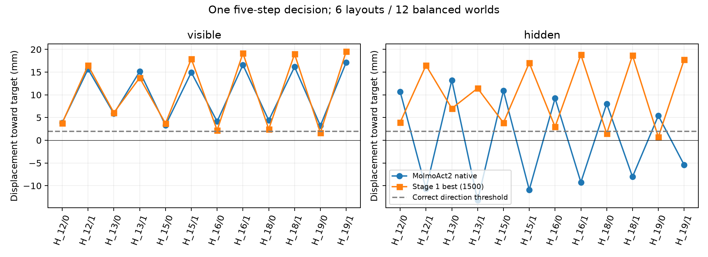

G_0_10_shifted
原生成功：True；best 成功：False
只比较 MolmoAct2-LIBERO 原生与阶段一 best（update 1500）。相同任务、物理初态、动作预算和 manual seed；原生使用自己的当前帧接口，best 使用训练时的几何与历史接口。
这是两个完整系统的比较。可以判断 best 是否改善表现，不能把差异单独归因于几何模块或历史模块。相机变化测试复用已有日志；历史测试为本次 GPU 0 新执行。
| 测试 | 条件 | 模型 | 成功/正确 | 独立布局 |
|---|---|---|---|---|
| camera | normal | MolmoAct2 native | 19/20 | 20 |
| camera | normal | Stage 1 best (1500) | 20/20 | 20 |
| camera | shifted | MolmoAct2 native | 19/20 | 20 |
| camera | shifted | Stage 1 best (1500) | 18/20 | 20 |
| history_direction | visible | MolmoAct2 native | 12/12 | 6 |
| history_direction | visible | Stage 1 best (1500) | 11/12 | 6 |
| history_direction | hidden | MolmoAct2 native | 6/12 | 6 |
| history_direction | hidden | Stage 1 best (1500) | 10/12 | 6 |
camera 计完整任务成功；history_direction 只计视觉恢复前首次 5 步是否朝正确目标移动。分母里的两种目标世界共用布局，统计时以布局为单位。

目标分列 ±6 cm。隐藏条件下当前 RGB、depth、本体状态和指令相同，历史画面不同；此前执行动作相同。4 个物理状态不匹配布局在读取模型结果前剔除，保留 6 个布局。灰屏是人工压力测试，不能代表自然遮挡泛化。
样本量只有 6 个独立布局；小样本精确成对检验及 bootstrap 区间同时保留在 paired_effects.csv，不能仅凭 bootstrap 区间不跨零宣称显著。2 mm 是固定主阈值，1/5 mm 只是事后敏感性分析。主指标未达标但方向正确，也仍计失败。
包括全部结果不一致案例，加一个 manual seed 1317 选择的共同成功案例。按同一仿真步对齐，每 5 步一帧、20 Hz 仿真、4 fps 视频；完成后冻结并标记。视频不代表推理实时速度。
原生成功：True；best 成功：False
原生成功：False；best 成功：True
原生成功：True；best 成功：False
原生成功：False；best 成功：True
原生成功：True；best 成功：True
demos.csv · evidence.json · geometry_episodes.csv · geometry_per_task.csv · history_action_dependence.csv · history_direction.pdf · history_episodes.csv · history_threshold_sensitivity.csv · paired_effects.csv · scores.csv
只有 2 个操作任务及 1 个历史任务，没有新物体类别、跨场景或主动获取信息的实证。置信区间及逐案例原始数值见 CSV；此处不把未检出的差异写成等价。
{kind=link}